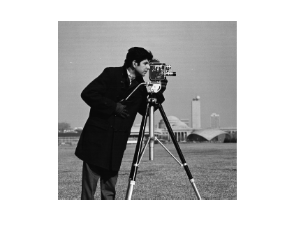
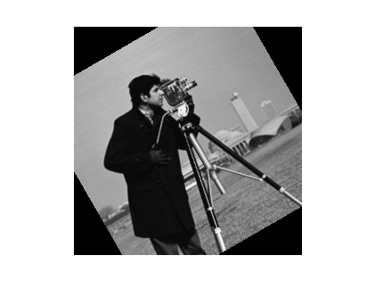

Contents
function demoRotateImage(varargin)
%DEMOROTATEIMAGE One-line description here, please. % % output = demoRotateImage(input) % % Example % demoRotateImage % % See also % % % ------ % Author: David Legland % e-mail: david.legland@grignon.inra.fr % Created: 2011-08-04, using Matlab 7.9.0.529 (R2009b) % Copyright 2011 INRA - Cepia Software Platform.
Input image
% read input image img = Image.read('cameraman.tif'); % show base image show(img);
Apply a rotation on the image
% create interpolator, here linear. interp = ImageInterpolator.create(img, 'linear'); % create transform transfo = CenteredMotionTransform2D([30 0 0]); transfo.setCenter([128 128]); % create an object for transforming image tim = BackwardTransformedImage(interp, transfo); % create resampler, initialized with corodinates of input image resampler = ImageResampler(img); % compute and showthe resampled image res = resampler.resample(tim); show(res);